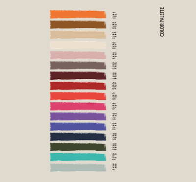
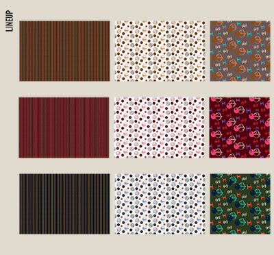
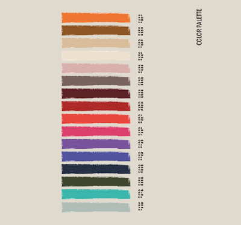
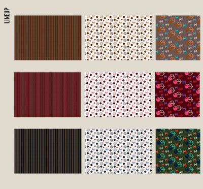
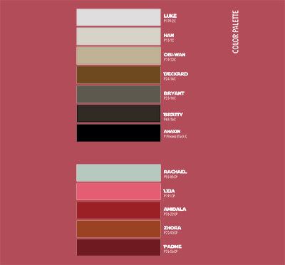
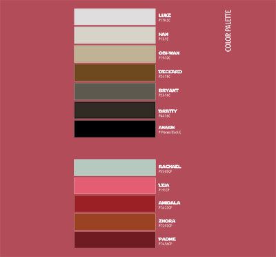
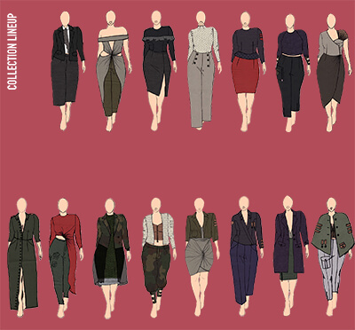
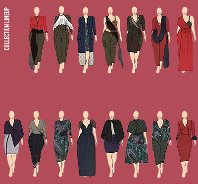
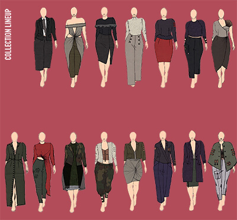
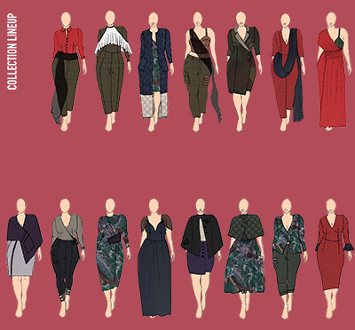

My thesis is a Spring/Summer ready-to-wear women’s collection dedicated to “plus sizes” that combines soft draped shapes with more structured ones.
In the last decade "plus size" fashion has gained popularity and more and more brands have been trying to include this new group of customers. However, both the term and what it implies remains rather unclear to most people.
In the first part of my thesis, I describe the sizing and the different definitions such as "stout", "curvy", "plus size”, etc. Then, I draw a timeline of the evolution of plus size fashion from the 1900s to today. I will especially focus on its birth and the so called "plus size moment" we are experiencing since 2010. Following this more historical explanation, I analyze few selected brands, their history, how they are relevant to plus size fashion, where they are located (in-store, online…), as well as their assets and liabilities.
Finally, I focus more on the obstacles and limits of plus size fashion. For example, the bad reputation of the designs or quality of the materials, the price…
Drawing from this research I have decided to create an entirely plus size collection inspired by the theme of this year’s fashion collection: ”So young, So old". More specifically, I took inspiration from old science-fiction movies such as Star Wars and Blade Runner, and the decade of the 1980s.
Both Blade Runner and Star Wars were considered innovative when they first aired in the late 1970s/ early 1980s because they introduced vintage, non futuristic costumes in Sci-fi movies. This choice wasn’t common before but can be considered quite interesting as it gives contrast between the old looking and the more futuristic costumes as well as general setting.
Both movies have also been reinterpreted in the past few years, 30 years after the first ones, with a new take at costumes but still keeping the same inspiration : Wold War II uniforms, 1980s punk bands, samurai and kimono like cloaks.
Both the movies themselves and their remakes/ sequels convey a feeling of new and old being mixed creating an interesting contrast to work with.
This prints collection was developed with "SO YOUNG SO OLD" as a general theme. The main inspiration was drawn from old science fiction movies and the way they saw the future. The main inspirations were drawn from the movies Star Wars and Blade Runner.
Both Blade Runner and Star Wars were considered innovative when they first aired in the late 1970s/ early 1980s because they introduced vintage, non futuristic costumes in Sci-fi movies. This choice wasn’t common before but can be considered quite interesting as it gives contrast between the old looking and the more futuristic costumes as well as general setting.
Both movies have also been reinterpreted in the past few years, 30 years after the first ones, with a new take at costumes but still keeping the same inspiration : Wold War II uniforms, 1980s punk bands, samurai and kimono like cloaks.
Both the movies themselves and their remakes/ sequels convey a feeling of new and old being mixed creating an interesting contrast to work with.
The final outcome is an all over and placed digital prints collection made up of three all over prints and three placed prints, all coming in three color variations.
This collection was developed with "SO YOUNG SO OLD" as a general theme. The main inspiration was drawn from old science fiction movies and the way they saw the future. The main inspirations were drawn from the movies Star Wars and Blade Runner.
Both Blade Runner and Star Wars were considered innovative when they first aired in the late 1970s/ early 1980s because they introduced vintage, non futuristic costumes in Sci-fi movies. This choice wasn’t common before but can be considered quite interesting as it gives contrast between the old looking and the more futuristic costumes as well as general setting.
They have also been reinterpreted in the past few years, 30 years after the first ones, with a new take at costumes but still keeping the same inspiration : Wold War II uniforms, 1980s punk bands, samurai and kimono like cloaks.
Both the movies themselves and their remakes/ sequels convey a feeling of new and old being mixed creating an interesting contrast to work with.
The final outcome is a 30 outfits size inclusive collection. Out of all the outfits, three were realized : one "straight" sized and two plus sized.
This collection was developed with "NEW WORLDS" as a general theme. The main inspiration was drawn from post World War 2 England and its situation : material shortages, new immigration and the rise of youth power.
During the Second World War, London and more generally the United Kingdom got bombed and destroyed by the Nazis. This not only affected the city geographically but also socially : minorities started to rise. Indeed, as they needed to rebuilt and heal, immigration rose, especially Indian immigrants. Women also settled in society since they worked like men during the war. Finally, also the youth grew more important and wanted to be heard, therefore the rise of countercultures.
War also affected people’s ability to purchase fabrics or materials : this influenced both clothing and design. And this during and after the restrictions as they had to first deal (saving materials, using new ones..) and then they started to rebel (using as much material as wanted).
The final outcome is a 30 outfits plus sized collection with a knitwear capsule collection. Out of all the outfits, three were realized.
This project was inspired by four themes picked at random in the beginning of the semester : The Ottoman Empire, Layered colors, Compouned shapes and Migration. From these themes the inspirations drawn were mosaics, layered paint, patchwork and the curl crested aracari toucan.
The final garment is an A-line dress made out of black light woolen felt, the bottom was spray painted in a gradient of purple and green.
The back features a sort of carré cut, much like a shirt, and the rest is covered in VHS tapes, arranged like fringes, also stray painted to give a gradient illusion to both remind of the feathers of the toucan and the layered colors.
The sleeve is worked around geometrical and triangular shapes to recall to the mosaics in the collages thanks to the raglan cut and the godets type inserts. These inserts also help give the shoulder line a very sharp, again geometrical aspect.


 




 



 


